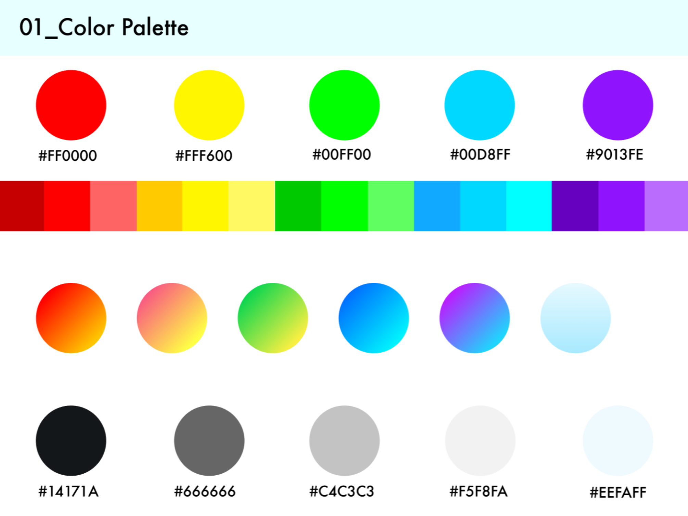
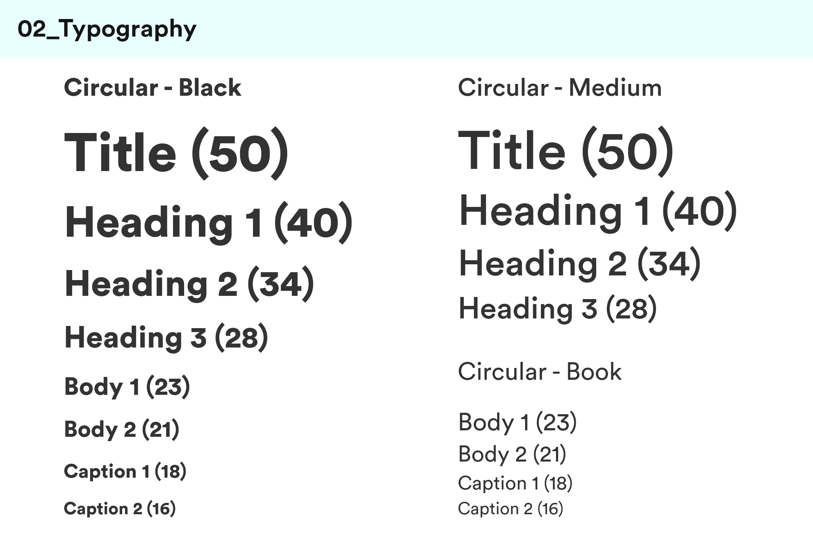
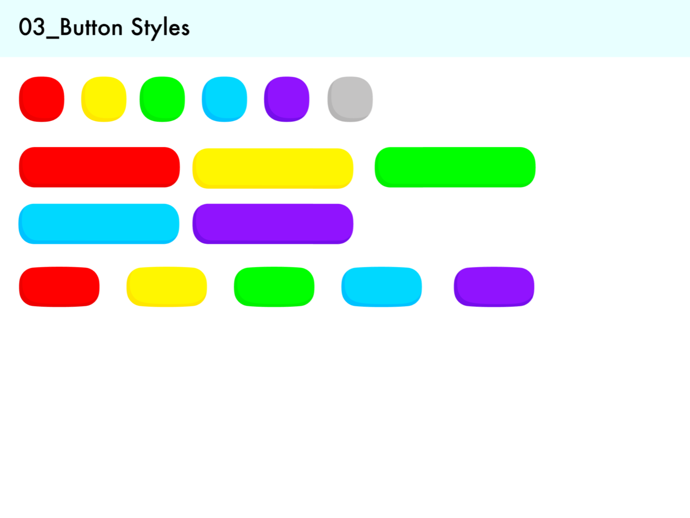

SPRING OS
Project Timeline
Jan - Mar 2019
My Role
UI/UX Design
Tools
Figma Adobe PS
Context
In the Mobile App Design class I took at the UW, I worked with a group of 4 others to create an all original operation system and its core applications, including Calculator, Clock, Phone, Messaging, etc. in 2 week sprints over the course of 10 weeks. Our group chose to create a tablet OS called Spring OS for kids ages 4 through 10. As a team, we set out to tackle:
How do we design a completely original tablet operating system for kids ages 4 through 10 that provides education and entertainment while ensuring for parental oversight and safe use?Identifying Design Language & Principles
Before diving into the ideation phase, we discussed and settled on the following design language and design principles that we wanted to guide us in our subsequent designs. We gained inspiration through competitive analysis on the existing tablets targeted towards kids such as Samsung Galaxy Kids Tablet or the Amazon Fire Tablet, and after analyzing for commonalities, pros, and cons of existing kids oriented mobile and tablet products, we came up with:
Next, we created the following style guide and defined our color palette, typography, and button/iconography styles:
|  |  |  |
Spring OS Apps & Features
In total, we created the following apps and features for our Spring OS, with the ones I specifically worked on in asterisks:
- Home Screen & Nav Bar
- Settings & Personalization**
- Phone App**
- Books App**
- Messaging
- Camera App
- Videos App
- Art App
- Calculator
- Clock
- Parental Controls
In the rest of this portfolio page, I will walk through my process for the Phone and Books apps I created.
Home Screen/Nav Bar
Before diving into the Phone and Books app, let's take a look at Spring OS's home screen and nav bar to understand where the phone and books app will reside and be accessed by users. These two components were decided and designed as a group; we went through many iterations, changing app icon styles, sizes, colors, the nav bar's location, the background style, etc. many times before settling on the following:

|

|
Spring OS's home screen resembles that of all major OS on the market today, but it includes a side navigation bar that is hidden by default and appears when the user gently swipes right from the left edge of the screen. Located on the nav bar is a search icon at the top, followed by notifications, phone, calculator, clock, and settings. These are the utilities we believed are most useful to our users while not needing a whole app dedicated to it. Upon tapping on one of these icons, a sidebar expands from this nav bar and the main content is displayed. In the features I worked on for Spring OS, Settings & Personalization as well as the Phone app resides in this nav bar.
Phone App
This app aligns with our Design Principle of "Communication and Connection". We wanted to facilitate a fast, easy, and smooth process for kids and parents to connect with each other. In the first iteration of the Phone App, we had not yet settled on the idea of our nav bar and utilities feature. So, the original Phone App was a app that took up the whole screen of the tablet. It included a local bottom navigation with 3 tabs: Favorites, Contacts, and Keypad. In the Favorites tab are the contacts that the user would need to access quickly and/or frequently. Tapping on the avatar of the contact would place the user in a call with the contact. Within a call, the user has the ability to mute themselves, put the phone on speaker, as well as end the call. In the Contacts tab, the user is presented with a list of their contacts with the ability to call a contact and "Favorite" a contact, which would add a contact to the "Favorites" tab. On the upper righthand corner is an icon that allow users to add a new contact. Lastly, in the Keypad tab, the user is presented with a simple numeric keypad. We omitted alphabetical characters on our keypad because we did not feel that it was necessary for our audience.

|

|

|

|
At the end of one of our 2 week sprints, we presented this app to our class, and received feedback from our professor, TA, and peers that the app feels "empty" and that they didn't think it was necessary for such a simple app to take up so much real estate of the tablet. This feedback was one of othe driving points that led us to design our expandable side navigation bar with utilities. With this feedback, and our change of direction to include a side nav bar, I changed the design of the Phone app to the following:

|

|

|

|
In this final design, the Contacts screen is presented in one list, with contacts that are Favorited on the top of the list. Additionally, besides calling, I added a video icon to allow users to easily call or video call from the same page. Adding a new contact stays the same and can be done with the icon on the upper right hand corner. Lastly, the keypad is located at the bottom of the panel.
Within call, the layout is similar to that of the orignal design, except I also added a feature for the user to easily switch to video call. The dialer layout stays the same as the original design, and the "Add Contact" includes very simple and straightforward fields where the user only has to input name and phone number and a photo if desired.
Books App
The intent behind this app is to provide kids with a fun way for education. Originally, the Books App was not assigned to me; another member of my team designed the first version, but after we presented it to our class at the end of one of our early 2 week sprints, I was tasked with redesigning this app based on the feedback received. Our original design is as follows. Here, you can traces of our early stage global nav bar, where we originally had it on top, and we had invisioned the Books App to reside and be accessed through this nav bar. Within the app itself, there is a library with 2 rows of books, one being "My Books", which are books the user has downloaded, and "Recently Added", which are books the user has recently downloaded to their library. There is also a "Books Store", which can be accessed through the icon on the upper left hand corner, and a search which can be accessed through the icon on the upper right hand corner. Upon tapping a book, the user is taken into the book, where our original designer designed the screen layout to be split vertically down the middle, with half of it containing text, and the other half containing the picture. Navigating between pages can be done with the arrows at the bottom of the screen. The Book Store's layout is like that of the Library, and upon tapping into a book, the user will be displayed a brief description of the book and a "Download" button.

|

|

|

|
The main feedback we received from this original design was that within a book itself, the screen should not be divided into two vertical halves. It's difficult to display pictures in this format, considering that a lot of picture books are in landscape rather than portrait layout. Additionally, our navigation system was not something people liked. For instance, it was difficult to know at first how to access the Book Store from the Library.
Taking this feedback into consideration, I redesigned my teammate's original Books App accordingly. I also tried to incorporate a more engaging and fun feature that allow for collaborative learning. The following is the final version of our Books App in Spring OS.

|

|

|

|
-
Library & Book Store:
By this point, we redesigned our whole global navigation, so the top nav bar in the original design was removed. Additionally, I redesigned the local navigation to a bottom nav with 3 tabs that is easy to understand and access. I also removed the two arrows at the end of the rows, and instead, designed the overflow look where users will understand the visual cue to drag/scrub through to view more books. The book store is designed with the same layout as the Library. -
Reading a Book:
Within a book, I redesigned the layout to be landscape style and in full screen mode. The text is embedded into the graphics, and overall, makes the user feel more like they are actually reading a book. At the bottom of the screen, the navigation bar that was present in the Library Scren is hidden, but appears when the user tap anywhere on the book, allowing kids to exit the book. Within a book, beides having arrows to flip between pages, I also added a video call icon and a sound icon. The sound icon allow kids to listen to the audio of that page. -
Video Call While Reading:
The video call icon allow our users to call someone in their contacts so that family, friends, or other loved ones can engage in reading with our user even when not physically with our primary users. The video call screen is the same one used for regular video calls accessed through the Phone App; however, when in this "Reading" mode, the system automatically applies a filter relevant to the story the user is currently reading. Furthermore, the caller on the other end will be shown the text of the story so they can read aloud with our primary users (kids).
Final OS Design
This portfolio piece presents the Phone App and the Books App that I took ownership of. However, I also contributed bits and pieces in the rest of the OS design. Our final design of the Spring OS can be accessed here, where you can find the rest of our apps that address the education, entertainment, and parental oversight pieces we wanted to tackle in our problem statement.
What I Learned
- Importance of creating components: Working in a team of 5, it was important to keep the whole design consistent. Creating components and re-using these throughout not only saved us time, but also ensured our designs are consistent with each other's.
- Importance of using a consistent grid: Because our team isn't always physically together when designing, it was important to define details that would keep our design as consistent as possible. By defining our spacing and margins on a 8pt grid, we were able to keep our designs as pixel perfect as possible.
What I Would Do Differently
- User Research: The amount of user research we did was very minimial and limited to articles, apps, and devices online. If I were given more time and resources, I would like to observe kids using phones and/or tablets to understand their familiarity with these devices and what they do on these devices. I would also like to interview parents to understand any concerns they may have with their kids using these technology.
- Usability Testing: One of our team members had about 4 cousins that fell in our target age range of 4 - 10, so we were able to get feedback regarding some color and character choices. However, this was very limited, and if given more time and resources, I would like to take our prototype to actual kids and their parents and conduct usability tests to understand if our design is understandable, can be easily navigated, and information can be found.
View complete Spring OS design